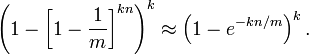

布隆过滤器(Bloom Filter)详解
2012-07-13 18:35 by Haippy, 13540 阅读, 6 评论, 收藏, 编辑
布隆过滤器［1］（Bloom Filter）是由布隆（Burton Howard Bloom）在1970年提出的。它实际上是由一个很长的二进制向量和一系列随机映射函数组成，布隆过滤器可以用于检索一个元素是否在一个集合中。它的优点是空间效率和查询时间都远远超过一般的算法，缺点是有一定的误识别率（假正例False positives，即Bloom Filter报告某一元素存在于某集合中，但是实际上该元素并不在集合中）和删除困难，但是没有识别错误的情形（即假反例False negatives，如果某个元素确实没有在该集合中，那么Bloom Filter 是不会报告该元素存在于集合中的，所以不会漏报）。
在日常生活中，包括在设计计算机软件时，我们经常要判断一个元素是否在一个集合中。比如在字处理软件中，需要检查一个英语单词是否拼写正确（也就是要判断 它是否在已知的字典中）；在 FBI，一个嫌疑人的名字是否已经在嫌疑名单上；在网络爬虫里，一个网址是否被访问过等等。最直接的方法就是将集合中全部的元素存在计算机中，遇到一个新 元素时，将它和集合中的元素直接比较即可。一般来讲，计算机中的集合是用哈希表（hash table）来存储的。它的好处是快速准确，缺点是费存储空间。当集合比较小时，这个问题不显著，但是当集合巨大时，哈希表存储效率低的问题就显现出来 了。比如说，一个象 Yahoo,Hotmail 和 Gmai 那样的公众电子邮件（email）提供商，总是需要过滤来自发送垃圾邮件的人（spamer）的垃圾邮件。一个办法就是记录下那些发垃圾邮件的 email 地址。由于那些发送者不停地在注册新的地址，全世界少说也有几十亿个发垃圾邮件的地址，将他们都存起来则需要大量的网络服务器。如果用哈希表，每存储一亿 个 email 地址， 就需要 1.6GB 的内存（用哈希表实现的具体办法是将每一个 email 地址对应成一个八字节的信息指纹（详见：googlechinablog.com/2006/08/blog-post.html）， 然后将这些信息指纹存入哈希表，由于哈希表的存储效率一般只有 50%，因此一个 email 地址需要占用十六个字节。一亿个地址大约要 1.6GB， 即十六亿字节的内存）。因此存贮几十亿个邮件地址可能需要上百 GB 的内存。除非是超级计算机，一般服务器是无法存储的［2］。（该段引用谷歌数学之美：http://www.google.com.hk/ggblog/googlechinablog/2007/07/bloom-filter_7469.html）
基本概念
如果想判断一个元素是不是在一个集合里，一般想到的是将所有元素保存起来，然后通过比较确定。链表，树等等数据结构都是这种思路. 但是随着集合中元素的增加，我们需要的存储空间越来越大，检索速度也越来越慢。不过世界上还有一种叫作散列表（又叫哈希表，Hash table）的数据结构。它可以通过一个Hash函数将一个元素映射成一个位阵列（Bit Array）中的一个点。这样一来，我们只要看看这个点是不是 1 就知道可以集合中有没有它了。这就是布隆过滤器的基本思想。
Hash面临的问题就是冲突。假设 Hash 函数是良好的，如果我们的位阵列长度为 m 个点，那么如果我们想将冲突率降低到例如 1%, 这个散列表就只能容纳 m/100 个元素。显然这就不叫空间有效了（Space-efficient）。解决方法也简单，就是使用多个 Hash，如果它们有一个说元素不在集合中，那肯定就不在。如果它们都说在，虽然也有一定可能性它们在说谎，不过直觉上判断这种事情的概率是比较低的。
优点
相比于其它的数据结构，布隆过滤器在空间和时间方面都有巨大的优势。布隆过滤器存储空间和插入/查询时间都是常数。另外, Hash 函数相互之间没有关系，方便由硬件并行实现。布隆过滤器不需要存储元素本身，在某些对保密要求非常严格的场合有优势。
布隆过滤器可以表示全集，其它任何数据结构都不能；
k 和 m 相同，使用同一组 Hash 函数的两个布隆过滤器的交并差运算可以使用位操作进行。
缺点
但是布隆过滤器的缺点和优点一样明显。误算率（False Positive）是其中之一。随着存入的元素数量增加，误算率随之增加。但是如果元素数量太少，则使用散列表足矣。
另外，一般情况下不能从布隆过滤器中删除元素. 我们很容易想到把位列阵变成整数数组，每插入一个元素相应的计数器加1, 这样删除元素时将计数器减掉就可以了。然而要保证安全的删除元素并非如此简单。首先我们必须保证删除的元素的确在布隆过滤器里面. 这一点单凭这个过滤器是无法保证的。另外计数器回绕也会造成问题。
False positives 概率推导
假设 Hash 函数以等概率条件选择并设置 Bit Array 中的某一位，m 是该位数组的大小，k 是 Hash 函数的个数，那么位数组中某一特定的位在进行元素插入时的 Hash 操作中没有被置位的概率是：

那么在所有 k 次 Hash 操作后该位都没有被置 "1" 的概率是：

如果我们插入了 n 个元素，那么某一位仍然为 "0" 的概率是：
因而该位为 "1"的概率是：

现在检测某一元素是否在该集合中。标明某个元素是否在集合中所需的 k 个位置都按照如上的方法设置为 "1"，但是该方法可能会使算法错误的认为某一原本不在集合中的元素却被检测为在该集合中（False Positives），该概率由以下公式确定：

其实上述结果是在假定由每个 Hash 计算出需要设置的位（bit） 的位置是相互独立为前提计算出来的，不难看出，随着 m （位数组大小）的增加，假正例（False Positives）的概率会下降，同时随着插入元素个数 n 的增加，False Positives的概率又会上升，对于给定的m，n，如何选择Hash函数个数 k 由以下公式确定：
此时False Positives的概率为：

而对于给定的False Positives概率 p，如何选择最优的位数组大小 m 呢，

上式表明，位数组的大小最好与插入元素的个数成线性关系，对于给定的 m，n，k，假正例概率最大为：

下图是布隆过滤器假正例概率 p 与位数组大小 m 和集合中插入元素个数 n 的关系图，假定 Hash 函数个数选取最优数目：

Bloom Filter 用例
Google 著名的分布式数据库 Bigtable 使用了布隆过滤器来查找不存在的行或列，以减少磁盘查找的IO次数［3］。
Squid 网页代理缓存服务器在 cache digests 中使用了也布隆过滤器［4］。
Venti 文档存储系统也采用布隆过滤器来检测先前存储的数据［5］。
SPIN 模型检测器也使用布隆过滤器在大规模验证问题时跟踪可达状态空间［6］。
Google Chrome浏览器使用了布隆过滤器加速安全浏览服务［7］。
在很多Key-Value系统中也使用了布隆过滤器来加快查询过程，如 Hbase，Accumulo，Leveldb，一般而言，Value 保存在磁盘中，访问磁盘需要花费大量时间，然而使用布隆过滤器可以快速判断某个Key对应的Value是否存在，因此可以避免很多不必要的磁盘IO操作，只是引入布隆过滤器会带来一定的内存消耗，下图是在Key-Value系统中布隆过滤器的典型使用：
布隆过滤器相关扩展
Counting filters
基本的布隆过滤器不支持删除（Deletion）操作，但是 Counting filters 提供了一种可以不用重新构建布隆过滤器但却支持元素删除操作的方法。在Counting filters中原来的位数组中的每一位由 bit 扩展为 n-bit 计数器，实际上，基本的布隆过滤器可以看作是只有一位的计数器的Counting filters。原来的插入操作也被扩展为把 n-bit 的位计数器加1，查找操作即检查位数组非零即可，而删除操作定义为把位数组的相应位减1，但是该方法也有位的算术溢出问题，即某一位在多次删除操作后可能变成负值，所以位数组大小 m 需要充分大。另外一个问题是Counting filters不具备伸缩性，由于Counting filters不能扩展，所以需要保存的最大的元素个数需要提前知道。否则一旦插入的元素个数超过了位数组的容量，false positive的发生概率将会急剧增加。当然也有人提出了一种基于 D-left Hash 方法实现支持删除操作的布隆过滤器，同时空间效率也比Counting filters高。
Data synchronization
Byers等人提出了使用布隆过滤器近似数据同步［9］。
Bloomier filters
Chazelle 等人提出了一个通用的布隆过滤器，该布隆过滤器可以将某一值与每个已经插入的元素关联起来，并实现了一个关联数组Map［10］。与普通的布隆过滤器一样，Chazelle实现的布隆过滤器也可以达到较低的空间消耗，但同时也会产生false positive，不过，在Bloomier filter中，某 key 如果不在 map 中，false positive在会返回时会被定义出的。该Map 结构不会返回与 key 相关的在 map 中的错误的值。
Compact approximators［11］
Stable Bloom filters［12］
Scalable Bloom filters［13］
Attenuated Bloom filters［14］
相关链接
- Table of false-positive rates for different configurations from a University of Wisconsin–Madison website
- Interactive Processing demonstration from ashcan.org
- "More Optimal Bloom Filters," Ely Porat (Nov/2007) Google TechTalk video on YouTube
- "Using Bloom Filters" Detailed Bloom Filter explanation using Perl
参考资料
［1］维基百科：布隆过滤器：http://zh.wikipedia.org/zh/%E5%B8%83%E9%9A%86%E8%BF%87%E6%BB%A4%E5%99%A8
［2］数学之美二十一：布隆过滤器（Bloom Filter）：http://www.google.com.hk/ggblog/googlechinablog/2007/07/bloom-filter_7469.html
［3］Chang, Fay; Dean, Jeffrey; Ghemawat, Sanjay; Hsieh, Wilson; Wallach, Deborah; Burrows, Mike; Chandra, Tushar; Fikes, Andrew et al. (2006), "Bigtable: A Distributed Storage System for Structured Data", Seventh Symposium on Operating System Design and Implementation
［4］Wessels, Duane (January 2004), "10.7 Cache Digests", Squid: The Definitive Guide (1st ed.), O'Reilly Media, p. 172, ISBN 0-596-00162-2, "Cache Digests are based on a technique first published by Pei Cao, called Summary Cache. The fundamental idea is to use a Bloom filter to represent the cache contents."
［5］http://plan9.bell-labs.com/magic/man2html/8/venti
［8］http://en.wikipedia.org/wiki/Bloom_filter
［9］Byers, John W.; Considine, Jeffrey; Mitzenmacher, Michael; Rost, Stanislav (2004), "Informed content delivery across adaptive overlay networks", IEEE/ACM Transactions on Networking 12 (5): 767, DOI:10.1109/TNET.2004.836103
［10］Chazelle, Bernard; Kilian, Joe; Rubinfeld, Ronitt; Tal, Ayellet (2004), "The Bloomier filter: an efficient data structure for static support lookup tables", Proceedings of the Fifteenth Annual ACM-SIAM Symposium on Discrete Algorithms,
pp. 30–39
［11］Boldi, Paolo; Vigna, Sebastiano (2005), "Mutable strings in Java: design, implementation and lightweight text-search algorithms", Science of Computer Programming 54 (1): 3–23, DOI:10.1016/j.scico.2004.05.003
［12］Deng, Fan; Rafiei, Davood (2006), "Approximately Detecting Duplicates for Streaming Data using Stable Bloom Filters", Proceedings of the ACM SIGMOD Conference,
pp. 25–36
［13］Almeida, Paulo; Baquero, Carlos; Preguica, Nuno; Hutchison, David (2007), "Scalable Bloom Filters", Information Processing Letters 101 (6): 255–261, DOI:10.1016/j.ipl.2006.10.007
［14］http://en.wikipedia.org/wiki/Bloom_filter#Attenuated_Bloom_filters